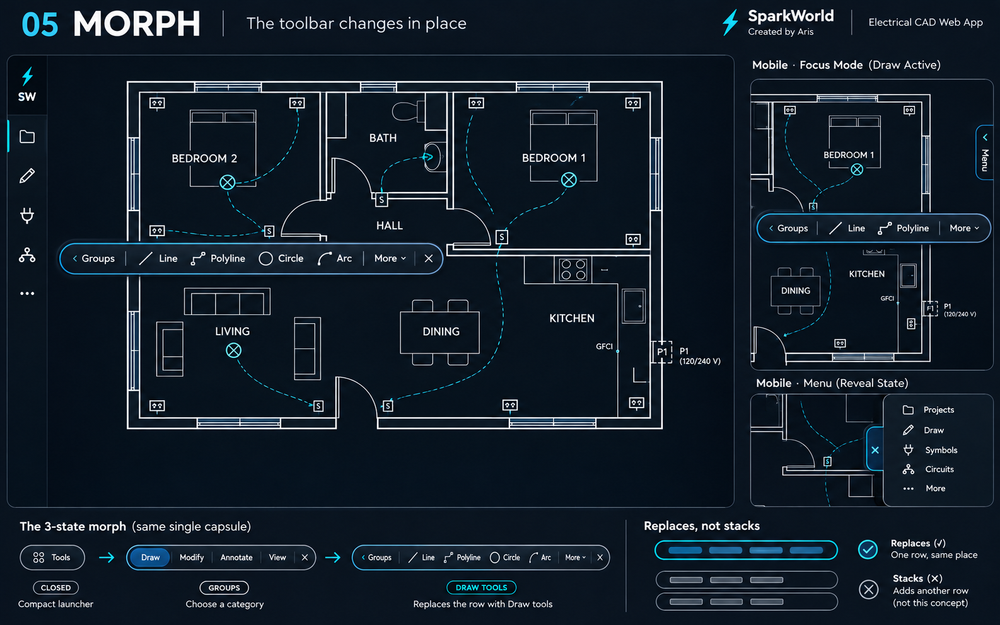

05
MORPH
Ένα εργαλείο που αλλάζει μορφή

Πάτησε για ολόκληρη εικόνα και μεγέθυνση ↗Tools → Draw → Line. Η ίδια μικρή πλωτή λωρίδα αλλάζει περιεχόμενο. Δεν προσθέτει δεύτερη σειρά. Back σε επιστρέφει στις ομάδες και × την κλείνει.
Η διαφορά
Ένα σταθερό σημείο πρόσβασης, σχεδόν καθόλου μόνιμη εργαλειοθήκη. Μπορεί να προσαρμοστεί στο υπάρχον UI του SparkWorld.
Ο συμβιβασμός
Χρειάζεται επιστροφή στις ομάδες όταν αλλάζεις κατηγορία. Τα λιγότερο συχνά εργαλεία θέλουν ένα επιπλέον πάτημα.